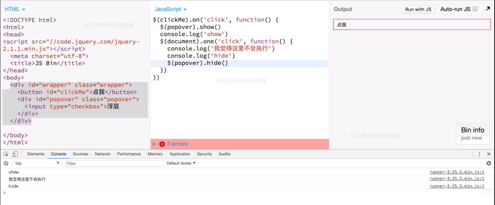

前端经典面试题之从输入URL到页面加载发生的事
总体说分为以下i几个过程：
- TCP连接
- 发送HTTP请求
- 服务器处理请求并返回HTTP报文
- 浏览器解析渲染页面
- 连接结束
状态码
状态码是由3位数组成，第一个数字定义了响应的类别，且有五种可能取值:
- 1xx：指示信息–表示请求已接收，继续处理。
- 2xx：成功–表示请求已被成功接收、理解、接受。
- 3xx：重定向–要完成请求必须进行更进一步的操作。
- 4xx：客户端错误–请求有语法错误或请求无法实现。
- 5xx：服务器端错误–服务器未能实现合法的请求。平时遇到比较常见的状态码有:200, 204, 301, 302, 304, 400, 401, 403, 404, 422, 500(分别表示什么请自行查找)。
听课笔记：
input里面写了checked 就表示勾上了，不屑就没勾
jsbin 中注释快捷键：选中某行或某几行 ctrl + /
vscode 代码检测插件：
yarn global add node-w3c-validator
node-w3c-validator --version (看能不能使用)会显示版本号
打开vs终端
node-w3c-validator -i index.html
WebStorm 使用条件 ：(代码有错会实时提醒你)
- 可以忍受打开一个项目要十秒以上
- 4G内存以上
- 加装ssd硬盘体验更好
<ruby>给汉字加注音的标签</ruby>
DOM事件：
addEventList( ,true)
先从爷爷开始到爸爸再到儿子（捕获）
addEventListener( ,flase/不写)
先从儿子到爸爸再到爷爷（冒泡）
在某一层上（如儿子这一层）谁先写谁就先执行
bootstrap里面有许多悬浮的东西
stopPropagation()//阻止冒泡 传播



为什么JavaScript是单线程？
JavaScript语言的一大特点就是单线程，也就是说，同一个时间只能做一件事。那么，为什么JavaScript不能有多个线程呢？这样能提高效率啊。
JavaScript的单线程，与它的用途有关。作为浏览器脚本语言，JavaScript的主要用途是与用户互动，以及操作DOM。这决定了它只能是单线程，否则会带来很复杂的同步问题。比如，假定JavaScript同时有两个线程，一个线程在某个DOM节点上添加内容，另一个线程删除了这个节点，这时浏览器应该以哪个线程为准？
所以，为了避免复杂性，从一诞生，JavaScript就是单线程，这已经成了这门语言的核心特征，将来也不会改变。
为了利用多核CPU的计算能力，HTML5提出Web Worker标准，允许JavaScript脚本创建多个线程，但是子线程完全受主线程控制，且不得操作DOM。所以，这个新标准并没有改变JavaScript单线程的本质。
如何禁止WebWork
// 关闭worker
work.terminat()
图片横着排 display: flex;
let $firstCopy = $images.eq(0).clone(true) //true 复制连同子元素
$slides.append($firstCopy)
$slide.prepend($lastCopy)
.hide()
.offset()
.show()
轮播组件： 搜swiper
图片的响应式： img{
max-width: 100%
}
<img>里的alt：可替换元素
<input type="submit />和<button type="submit"></button>的区别：
input里面不能再加其他内容如标签，button内可以加其他标签如<strong>提交</strong>
<input type="submit" require>中的require是html5的新特性，表示用户必须填写内容
js中建议用大写字母表示全局变量名，建议加分号
instanceof运算符用来验证，一个对象是否为指定的构造函数的实例。obj instanceof Object返回true，就表示obj对象是Object的实例。